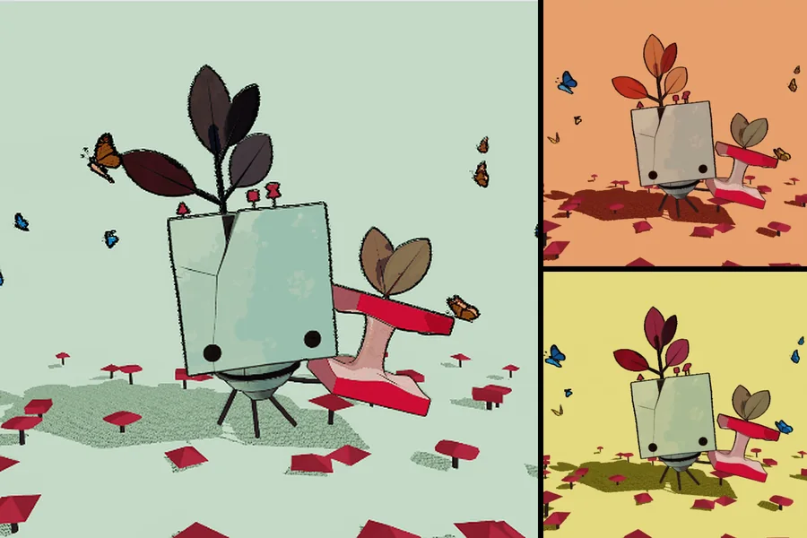
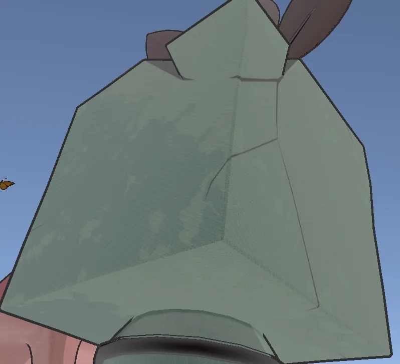
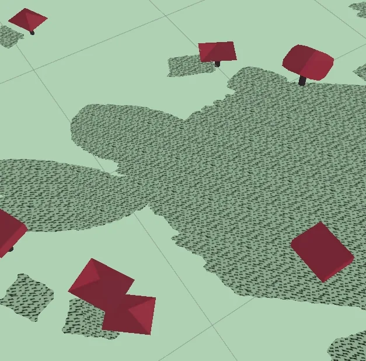
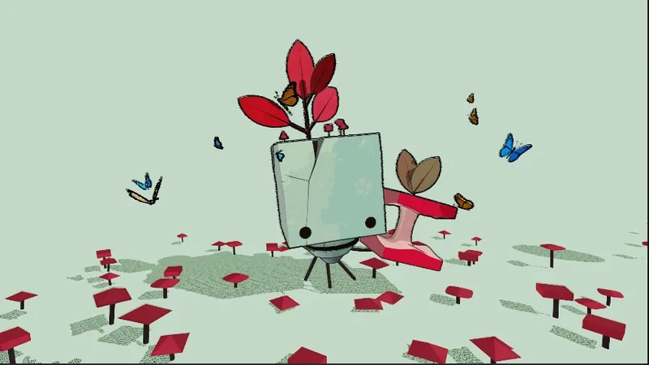
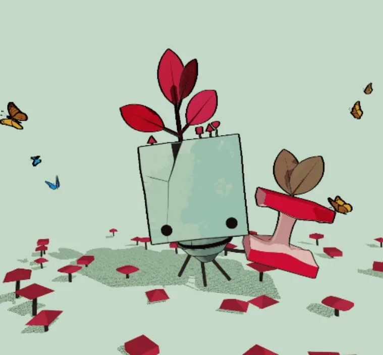
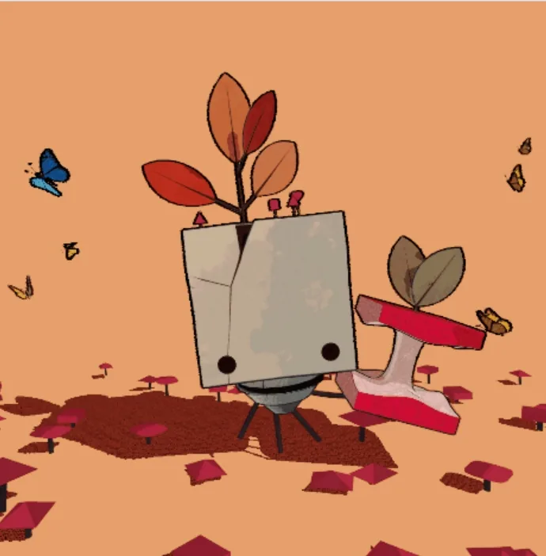
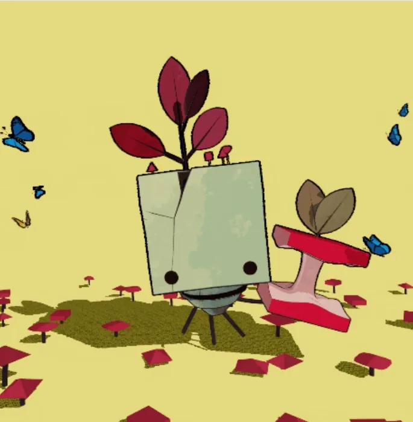

← All works
Stylized 3D Scene in Unity
A piece of 2D concept art from the game GRIS, rebuilt as a real-time 3D scene in Unity with non-photorealistic shading.

- Year
- 2024
- Type
- Individual project
- Built with
- Unity, Shader Graph, C#
Overview
- LightingA surface shader that supports multiple lights, with a rim light on back-lit edges
- Textured shadowsShadow materials sampled in object UV space, with a tiling control
- Animated colourThe leaves shift between four colour schemes over time
- OutlinesA full-screen pass runs a Sobel filter on depth and normals; noise makes the lines move
- Tone mappingA second full-screen pass applies ACES
- Three modesThe space bar switches the colour theme, the camera speed and the butterflies’ colours
The character and butterfly models are by other artists on Sketchfab: Forest Friend and Butterflies.
Shading
-

Rim light -

Custom shadow texture -

With ACES tone mapping


Three modes
-

Mode 1 -

Mode 2 -

Mode 3